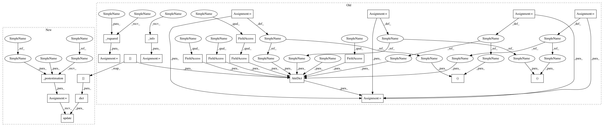

ccc5fbf3c100e2e54cf9b7b1a7218fc7ef034611,linearmodels/panel/model.py,BetweenOLS,fit,#BetweenOLS#Any#,359
Before Change
mu = 0
total_ss = float((y - mu).T @ (y - mu))
r2 = 1 - resid_ss / total_ss
r2w, r2b = self._rsquared(params)
entity_info, time_info = self._info()
res = AttrDict(params=params, deferred_cov=cov.deferred_cov,
debiased=debiased, df_resid=df_resid,
df_model=x.shape[1], nobs=self.dependent.values2d.shape[0],
name=self._name, var_names=self.exog.vars,
residual_ss=resid_ss, total_ss=total_ss,
r2=r2, r2w=r2w, r2b=r2b, s2=cov.s2,
entity_info=entity_info, time_info=time_info)
return PanelResults(res)
@classmethod
def from_formula(cls, formula, data):
After Change
def __init__(self, dependent, exog, *, weights=None):
super(BetweenOLS, self).__init__(dependent, exog, weights=weights)
def fit(self, debiased=False):
// TODO: Add WLS for unbalanced
y = self.dependent.mean("entity").values
x = self.exog.mean("entity").values
params = lstsq(x, y)[0]
df_resid = y.shape[0] - x.shape[1]
cov = HomoskedasticCovariance(y, x, params, df_resid)
eps = y - x @ params
resid_ss = float(eps.T @ eps)
if self._constant:
mu = y.mean()
else:
mu = 0
total_ss = float((y - mu).T @ (y - mu))
r2 = 1 - resid_ss / total_ss
res = self._postestimation(params, cov, debiased)
res.update(dict(df_resid=df_resid, df_model=x.shape[1], nobs=y.shape[0],
residual_ss=resid_ss, total_ss=total_ss, r2=r2))
return PanelResults(res)
@classmethod
def from_formula(cls, formula, data):
In pattern: SUPERPATTERN
Frequency: 4
Non-data size: 23
Instances
Project Name: bashtage/linearmodels
Commit Name: ccc5fbf3c100e2e54cf9b7b1a7218fc7ef034611
Time: 2017-03-29
Author: kevin.k.sheppard@gmail.com
File Name: linearmodels/panel/model.py
Class Name: BetweenOLS
Method Name: fit
Project Name: bashtage/linearmodels
Commit Name: ccc5fbf3c100e2e54cf9b7b1a7218fc7ef034611
Time: 2017-03-29
Author: kevin.k.sheppard@gmail.com
File Name: linearmodels/panel/model.py
Class Name: BetweenOLS
Method Name: fit
Project Name: bashtage/linearmodels
Commit Name: ccc5fbf3c100e2e54cf9b7b1a7218fc7ef034611
Time: 2017-03-29
Author: kevin.k.sheppard@gmail.com
File Name: linearmodels/panel/model.py
Class Name: PanelOLS
Method Name: fit
Project Name: bashtage/linearmodels
Commit Name: ccc5fbf3c100e2e54cf9b7b1a7218fc7ef034611
Time: 2017-03-29
Author: kevin.k.sheppard@gmail.com
File Name: linearmodels/panel/model.py
Class Name: FirstDifferenceOLS
Method Name: fit
Project Name: bashtage/linearmodels
Commit Name: ccc5fbf3c100e2e54cf9b7b1a7218fc7ef034611
Time: 2017-03-29
Author: kevin.k.sheppard@gmail.com
File Name: linearmodels/panel/model.py
Class Name: PooledOLS
Method Name: fit